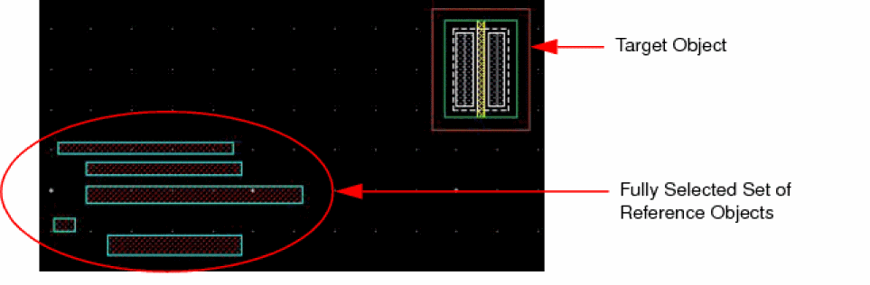
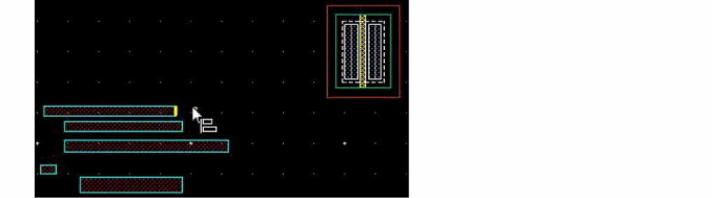
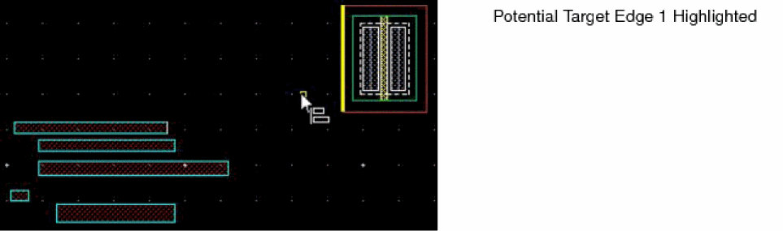
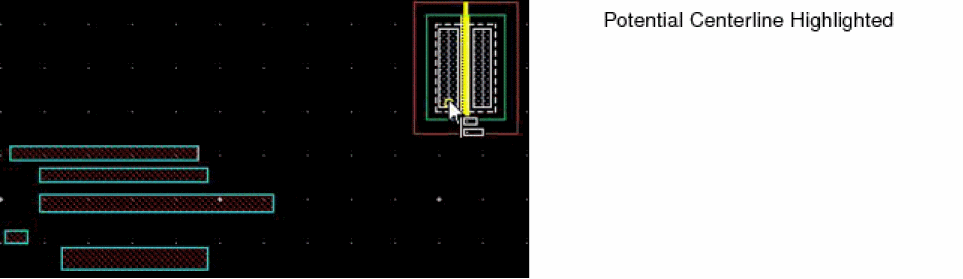
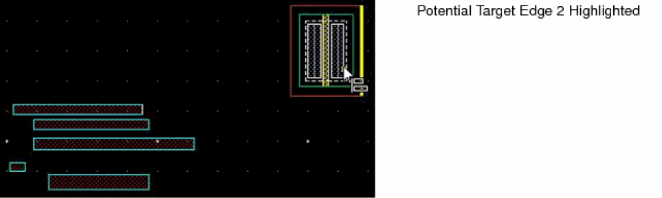
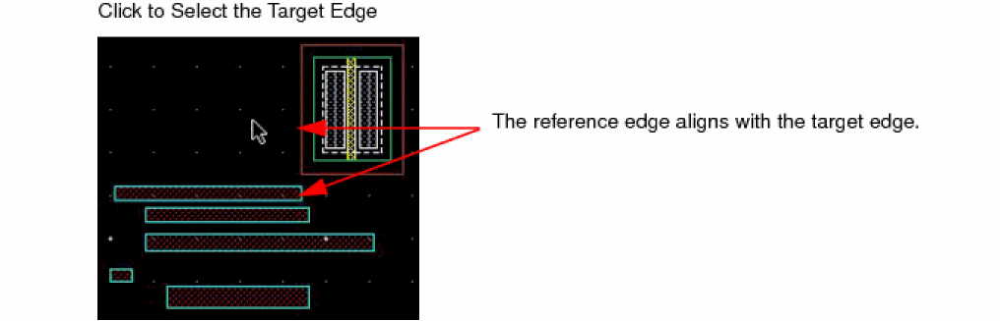

Aligning Edges and Centerlines with a Target Edge in Full Selection Mode
You can align edges and centerlines with a target point using full or partial selection mode.
To align edges of objects in a reference set with a target edge or centerline, in full selection mode:
-
On the Options toolbar in the layout window, ensure the Full Select button
is on. If not, press
F4to enable it. -
Select the reference set objects.
 - Select Edit – Quick Align to invoke the Quick Align command.
-
Press
F3or right-click and select Options from the Quick Align shortcut menu.
The Quick Align form appears. - Set the options as required.
-
On the canvas, move the pointer around the selected reference set.
The potential points, edges, and centerlines in the objects in the reference set are highlighted. By default, points, edges, and centerlines highlight. To highlight only the edges and centerlines, right-click and select Snap to Edges from the Quick Align shortcut menu. -
Click to set a highlighted edge as the reference edge.
The reference edge must be part of the selected reference set.
 -
Move the pointer close to the target object.
The potential edges and centerlines parallel to the reference edge highlight. The figures below show the potential edges and centerline highlighted when the pointer is moved close to the target object.
 -
Do one of the following to select a highlighted target edge:
-
Click the highlighted target edge.
The object with the reference edge moves to align with the target edge. All the objects in the reference set move by the same distance. The relative spacing amongst the reference set objects is maintained.
The figure below shows the alignment of the reference set when the potential target edge is set as the target edge.The pre-selected reference set objects remain selected after the alignment. -
Double-click the highlighted target edge.
The object with the reference edge moves to align with the target edge. All the objects in the reference set move by varying distances to align with the target edge, as the reference edge. The relative spacing amongst the reference set objects is lost.
The figure below shows the alignment of the reference set when the potential target edge is set as the target edge.The pre-selected reference set objects remain selected.
-
Double-click at a point when no target edge is highlighted.
The object with the reference edge moves to align with the point. All the objects in the reference set move by varying distances to align with the target point, as the reference edge. The relative spacing amongst the reference set objects is not maintained.
The figure below shows the alignment of the reference set to the point.The pre-selected reference set objects remain selected.
-
Click the highlighted target edge.
If you quick align an edge of a wire (pathSeg) in full selection mode to a target edge, the wire moves to align the selected edge to the target edge, as shown below.

Related Topics
Object Alignment by Using the Quick Align Command
Return to top